Префектура Кагосима · Амами-Осима · природа
Амами-Осима с гидом: мангровый лес, туманные джунгли Кинсакубару и ночная встреча с амамийским кроликом
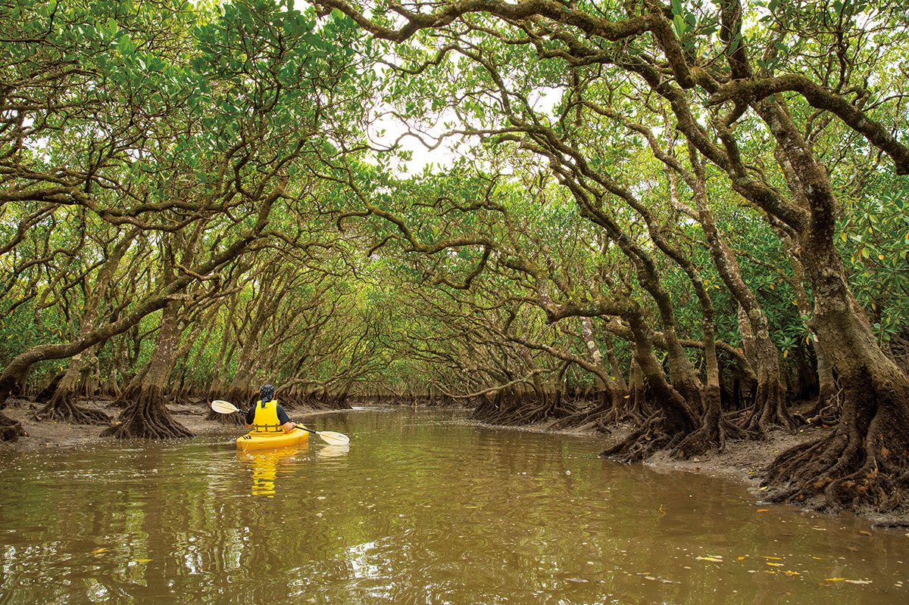
На Амами-Осиме, острове на юге префектуры Кагосима, живут звери, птицы и растения, которых больше нет нигде на планете. В 2021 году остров вошёл в список Всемирного природного наследия ЮНЕСКО, и лучше всего его природа открывается на экотурах с гидом: днём на каноэ и пешком, ночью из окна медленно идущей машины.
Остров
Шкатулка с драгоценностями эволюции
Амами-Осима лежит между Кюсю и Окинавой. Широта и тёплое течение Куросио дают острову влажный субтропический климат, и здесь соседствуют северные и южные виды. Остров занимает меньше 0,2% территории Японии, но из примерно 38 000 видов живых существ, известных в стране, здесь найдено 5083. Многие из них эндемики, многие под угрозой исчезновения: амамийский кролик, амамийская сойка и другие.
Такое разнообразие делает остров редким даже в мировом масштабе, и потому его особенно нужно беречь. В 2021 году Амами-Осима вместе с Токуносимой, севером острова Окинава и Ириомотэ вошла в список Всемирного природного наследия. Признание получило не одно какое-то место, а всё многообразие здешней жизни, и почувствовать его проще всего вместе с гидом.
Мангровы
На каноэ через лес, который стоит в воде
Один из самых доступных способов увидеть особую экосистему острова это прогулка на каноэ по мангровому лесу в Сумиё. Этот район города Амами на 94% покрыт горами и лесом, а его первобытный мангровый лес второй по величине в Японии после леса на Ириомотэ.
Мангровыми называют деревья, которые растут в устьях рек и на приливных отмелях тропиков и субтропиков. В Сумиё лес образуют в основном два вида, бругиера и канделия, а рядом с ними растут херитьера и другие растения. Вместе с субтропическими дождевыми лесами мангровы держат на себе всё биоразнообразие острова: здесь в одной экосистеме живут и сухопутные, и морские животные.
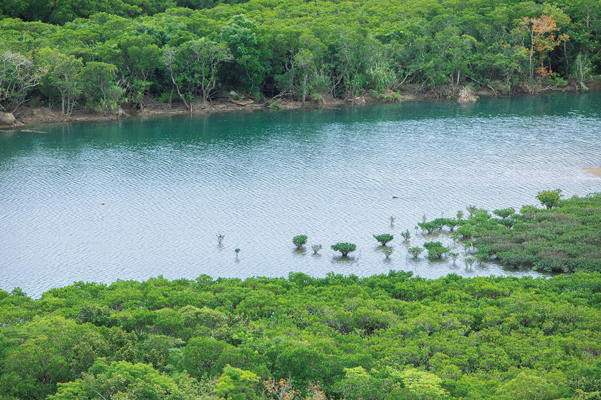
Мангровый лес меняется вместе с приливом, а в отлив обнажённое дно превращается в настоящий звериный рай. Больше всего здесь крабов: крабов-скрипачей и крабов-солдат. У корней выглядывает илистый прыгун, рыба, которая живёт и в воде, и на суше, с забавно серьёзной мордой. В воде водится рюкюский аю: на Окинаве он вымер, и теперь его можно встретить только на Амами-Осиме. Корни мангров сплетаются, как корзина, и служат мальками надёжным укрытием. Над отмелью кружат птицы, которые охотятся на её обитателей, например амамийская сойка и рюкюская совка.
На каноэ в парке «Куросио но мори Мангроув-парк» на всё это смотришь почти с высоты самих обитателей леса. В солоноватой воде, где смешиваются река и море, течение спокойное, так что плыть могут и новички, и дети.
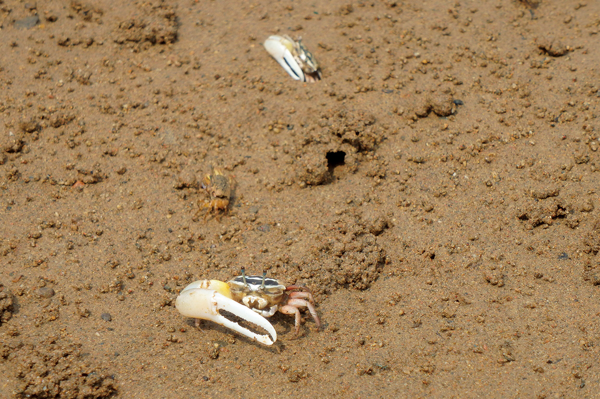
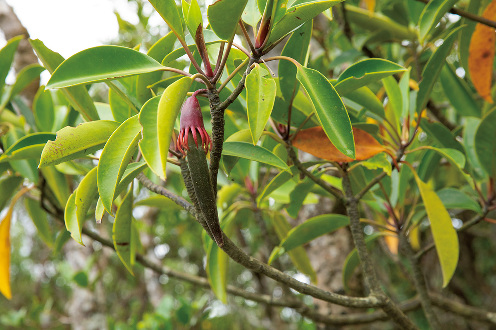
На гребне холма над мангровым лесом сохранились руины горной крепости. Когда точно её построили, неизвестно, но скорее всего между XIV и началом XVII века. Это напоминание о том, что люди на острове издавна живут рядом с природой. Сегодня здесь смотровая площадка с видом на мангровый лес, и на неё стоит подняться до или после прогулки на каноэ.
«Куросио но мори Мангроув-парк»
- Адрес
- префектура Кагосима, город Амами, Сумиё, Исихара, 478
- Цены / Вход
- каноэ на 1 или 2 человек, прогулка около часа
Первобытный лес
Кинсакубару, где рождается туман
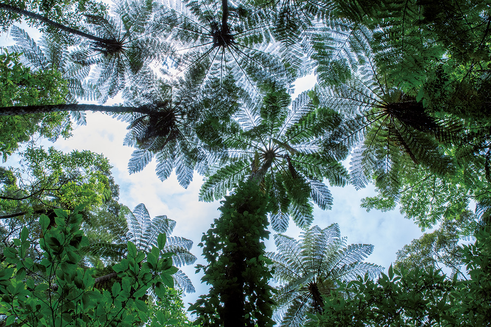
Вторая опора биоразнообразия острова это нетронутые субтропические дождевые леса, и самый известный из них Кинсакубару. Здесь растут древовидные папоротники, которые называют живыми ископаемыми, и множество других субтропических растений. Много эпифитов, растущих на других деревьях, и растений, которые легко дают новые побеги. Поэтому лес быстро восстанавливается, даже если тайфун повалит деревья.
Амами известна обильными дождями, и это напрямую связано с лесом. Нагретые солнцем растения, остывая, испаряют воду. Влага поднимается туманом, влажный ветер остывает и проливается дождём. В туманном Кинсакубару легко забыть, что вы в Японии.
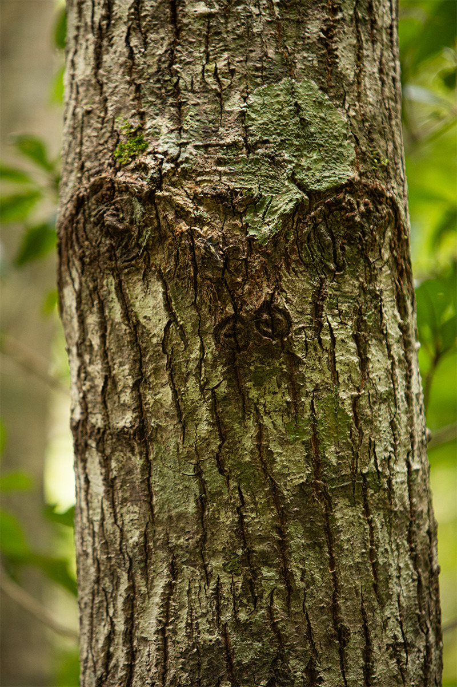
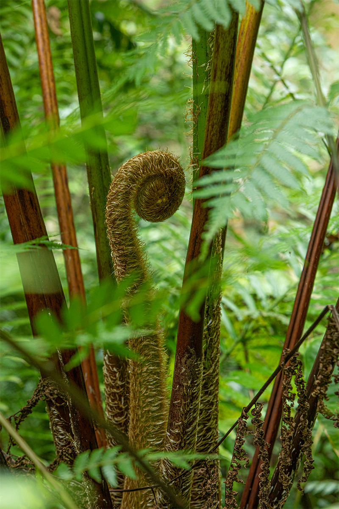
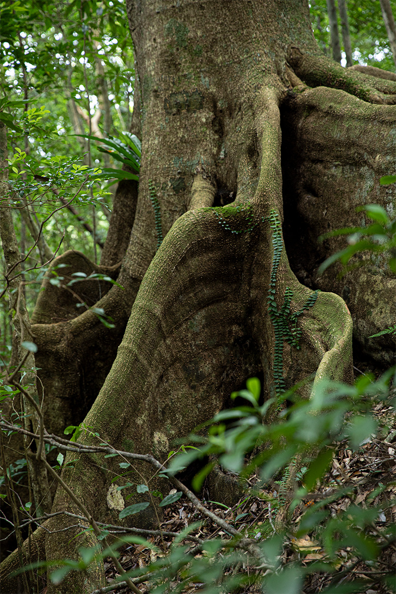
В Кинсакубару много вечнозелёных широколиственных деревьев, редких орхидей и эндемиков, которым грозит исчезновение. Не зная, куда смотреть, многое легко пропустить, поэтому по лесу ходят с сертифицированным экогидом и не спеша. Вместе с дорогой из центра Насэ, главного города острова, прогулка занимает около четырёх часов.
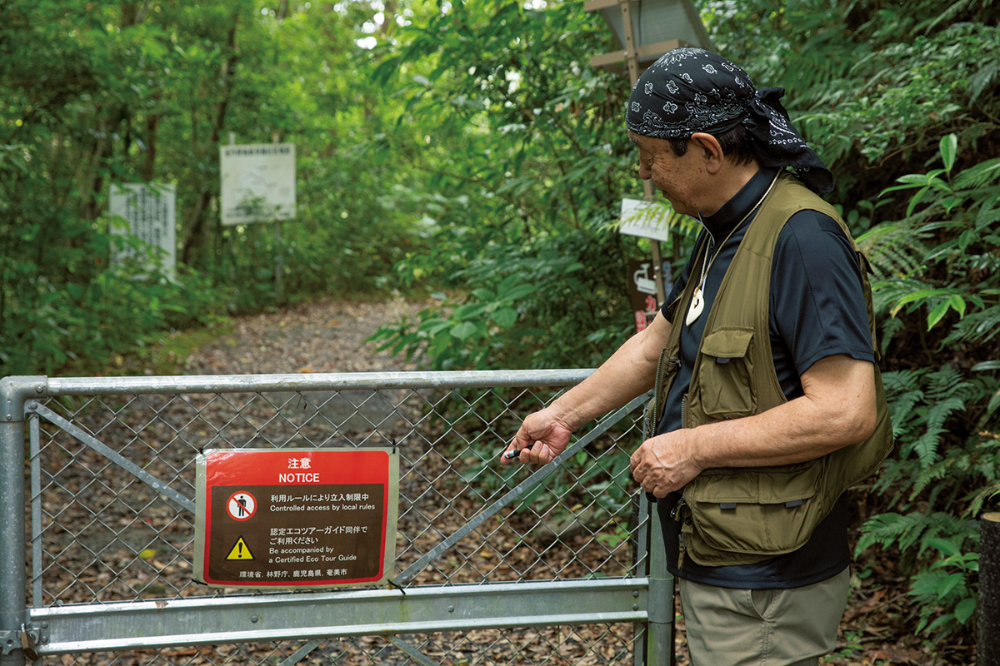
Птицы, которых нет больше нигде
Из 633 видов птиц, отмеченных в Японии, на Амами-Осиме встречаются 315, так что остров давно стал местом паломничества любителей наблюдать за птицами. Многие эндемики здесь ярко окрашены и красиво поют, и их красота захватывает даже тех, кто птицами никогда не увлекался.
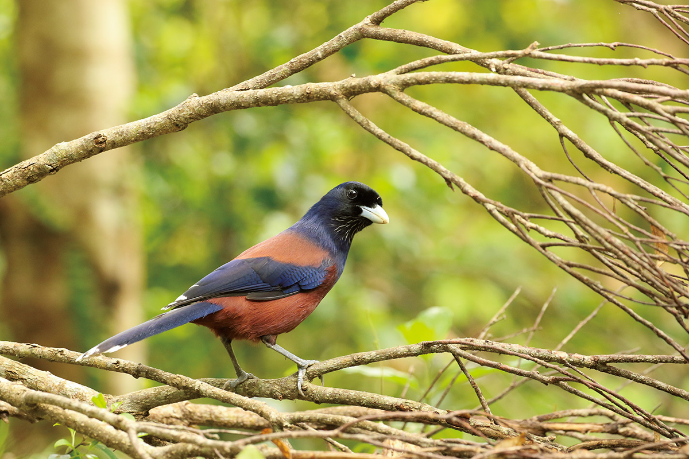
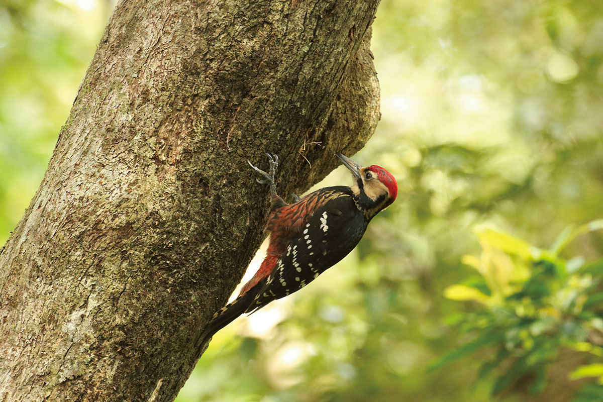
Птиц можно встретить по всему острову, но лучше всего для наблюдения подходит «Лес для наблюдения за природой Амами» в горах Нагумо. Здесь отмечено около 15 видов, в том числе амамийская сойка, рюкюский соловей и дятел Оустона. Тропы проложены так, чтобы видеть деревья не только у корней, но и на средней высоте и у самых вершин, и шансы встретить птиц высоки. Со смотровой площадки открывается залив Тацуго, один из десяти самых красивых видов Амами. Если заранее договориться, по лесу можно пройти с местным гидом.
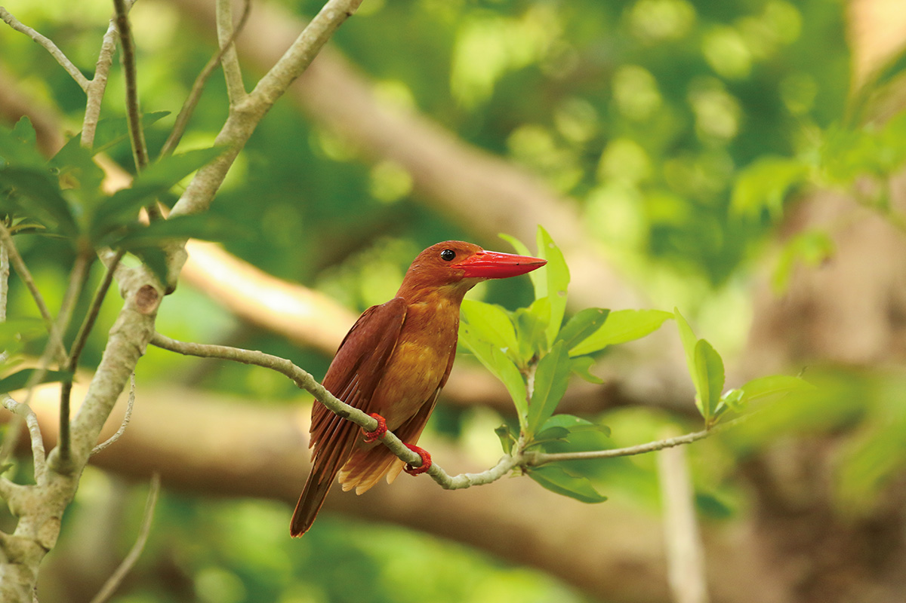
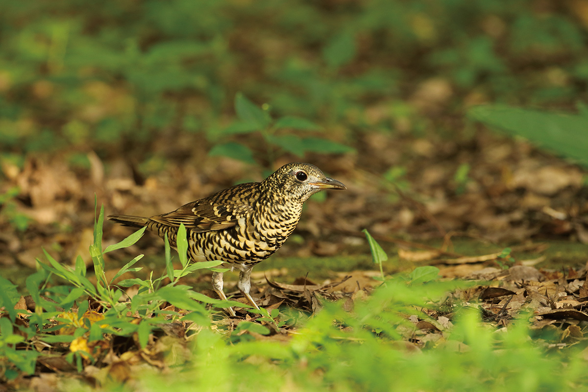
«Лес для наблюдения за природой Амами»
- Адрес
- префектура Кагосима, Осима, посёлок Тацуго, горы Нагумо
- Цены / Вход
- гид по лесу по предварительной записи
Ночь
Ночной лес не спит
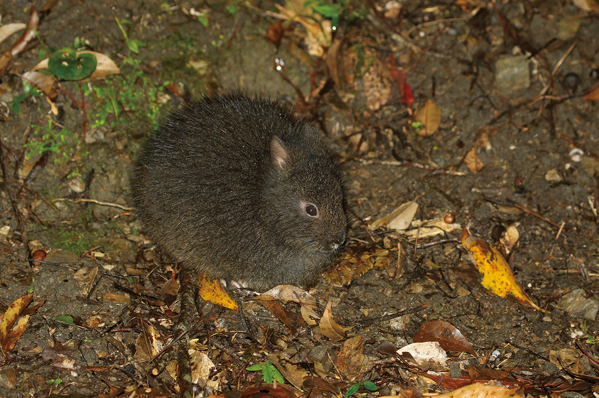
В ночном туре по притихшему лесу можно увидеть ночных животных, в том числе амамийского кролика, которому грозит исчезновение. Гид, знающий повадки каждого зверя, ведёт машину очень медленно, и наблюдать можно, не выходя из неё. Чтобы заметить в темноте осторожное животное, приходится напрягать зрение, слух и даже обоняние, и в какой-то момент чувствуешь себя частью леса.
На пути в лес гид обязательно расскажет и о прошлом острова. Когда-то на Амами-Осиму завезли мангустов, чтобы бороться с ядовитой змеёй хабу, но мангусты стали есть местных эндемиков и серьёзно подорвали экосистему. С 2000 года их отлавливают, и сегодня мангусты почти истреблены. Во многом благодаря этому в лесу снова можно встретить самых разных животных.
Кого можно встретить ночью
Рюкюская длинношёрстная крыса. Самая крупная крыса Японии, 20–30 см в длину. Живёт на деревьях, на Амами её называют «доодзиро».
Амамийская колючая мышь. Водится только на Амами-Осиме, длина 9–16 см. Вид под угрозой исчезновения, учёные изучают, как помочь ему размножаться.
Лягушка Исикавы. Её считают самой красивой лягушкой Японии: около 10 см в длину, зелёная, с яркими золотыми пятнами. Живёт только в горах, поросших вечнозелёным широколиственным лесом.
Амамийский вальдшнеп. Ночью оживляется и ищет на земле червей. Почти не боится людей, длина около 35 см.
Рюкюская совка. Живёт на островах Амами и на Окинаве. Днём отдыхает, притворяясь веткой, ночью охотится, часто можно увидеть пары или родителей с птенцами.
Гид
Почему без гида сюда лучше не ходить
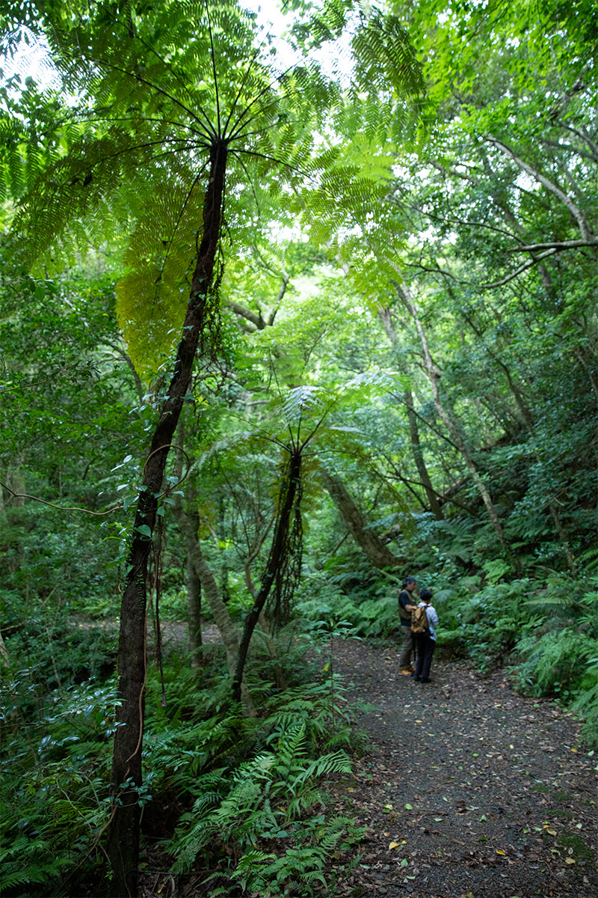
Чтобы поездка на Амами-Осиму не свелась к обычной прогулке по лесу, нужен профессиональный проводник. Об этом говорит глава Совета экотур-гидов Амами-Осимы, двадцать лет водящий туристов по мангровому лесу, Кинсакубару и ночным дорогам. Совет считает, что охрана природы и есть будущее острова, и занимается правилами посещения и подготовкой гидов. В ночных турах к амамийскому кролику у главы совета, по его словам, животное удаётся увидеть в 99,9% случаев.
Туристов, в том числе иностранных, будет становиться всё больше. Поэтому, по его мнению, главная задача сейчас в том, чтобы опытных гидов стало больше, а путешественники знали о системе сертифицированных экогидов.
«Возьмём амамийского кролика, который активен ночью. Он оставляет помёт на открытых местах и поэтому выходит на дороги. На тёмной горной дороге светят только фары. Получается, что сегодня главный враг кролика это машина, за рулём которой сидит человек. С опытным гидом это безопасно, но я прошу туристов не ездить ночью по перевалам самостоятельно»
глава Совета экотур-гидов Амами-Осимы
С таким проводником начинаешь замечать в лесу то, мимо чего раньше прошёл бы, и сам собой задумываешься о том, как его сберечь. Природа Амами ценна не только для местных жителей, но и для гостей, и сохранить её без внимательных путешественников не получится.
Остров известен прежде всего морем, но его горы и леса по богатству не уступают ничему в мире. Чтобы насладиться и тем и другим, удобно провести на острове несколько ночей: жить в отеле у пляжа и выезжать в лес с гидом. Лучшее время для поездки наступает после окончания сезона дождей, когда осадков меньше всего за год.
Кролик
Амамийский кролик: лучше копает, чем прыгает
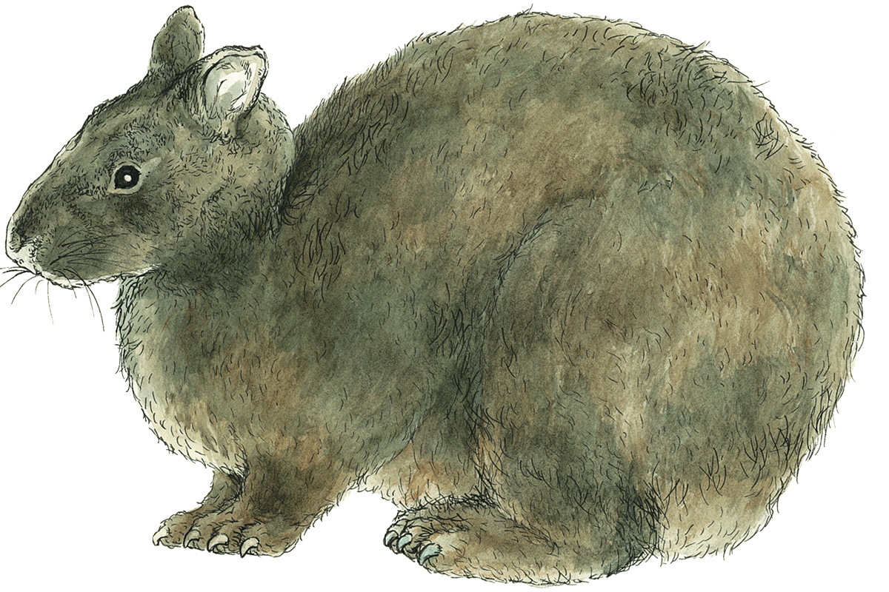
Амамийский кролик живёт только на Амами-Осиме и Токуносиме. Зоолог, специалист по млекопитающим, объясняет, что это одна из самых древних по облику ныне живущих зайцеобразных: по одной из версий, кролик обитает здесь от 3 до 5 млн лет. Его предки жили на материке и дошли до самого его края, а на острове, где не было хищников, их потомки спокойно жили дальше. На материке позже появились зайцы, гораздо лучше приспособленные к выживанию, и все кролики с древними чертами там вымерли.
Зайцы сформировались в степях, поэтому быстро бегают, а большие уши помогают им сбрасывать тепло, когда тело разогревается от бега. У амамийского кролика и тело, и уши маленькие, лапы короткие, бегает он плохо. Зато он отличный землекоп: днём сидит в норе на склоне, а ночью выходит наружу.
Детёнышей он растит необычно. Мать роет для них отдельную нору и закрывает вход землёй, чтобы туда не заползла хабу. Приходя кормить, она раскапывает вход, детёныш выбирается, пьёт молоко и возвращается в нору, а мать снова засыпает вход и уходит. Так повторяется раз в 48 часов: ровно столько нужно детёнышу, чтобы переварить молоко, а матери, чтобы оно снова пришло.
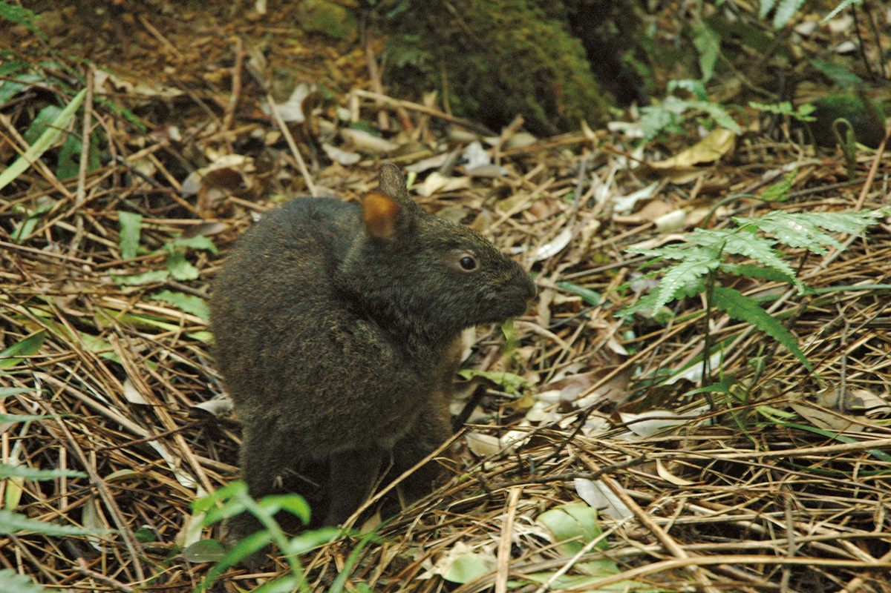
Коротко об амамийском кролике. Отряд зайцеобразные, семейство зайцевые. Длина тела с головой 41–51 см, вес 1,3–2,7 кг. Численность в 2003 году: от 2000 до 4800 особей на Амами-Осиме и около 200 на Токуносиме. Ест траву, например мискантус, и жёлуди кастанопсиса. Живёт в норах на склонах в первобытных вечнозелёных лесах. Шерсть снаружи бурая, внутри серая.
Почему он под угрозой
Леса вырубают, и места обитания кролика распадаются на отдельные островки. На Токуносиме, где освоение земель началось давно, кролик держится в основном в горных лесах, и изолированные группы рискуют исчезнуть. Серьёзная угроза исходит от мангустов и одичавших кошек, завезённых людьми, а ещё опасаются вирусных болезней, которые переносят чёрные крысы. По ночам кролики выходят на лесные дороги за молодыми побегами, и под колёсами машин они гибнут постоянно.
Как его охраняют
Чтобы понимать, где и сколько кроликов живёт, считают помёт и ставят фотоловушки. Часть ареала стала национальным парком и охраняется как природный памятник. В 2005 году появился отряд по борьбе с мангустами, и с помощью местных жителей и учёных мангусты почти истреблены. Позже выяснилось, насколько опасны одичавшие кошки, поэтому их планомерно отлавливают в лесу и отдают желающим.
Где узнать о кролике больше
На Токуносиме есть домик для наблюдения за амамийским кроликом. На экраны в нём выводится изображение с камер, установленных там, где кролики появляются чаще всего. Здесь же есть книги о кролике и сад с растениями, которые он ест, так что о его жизни можно узнать всё сразу. Посещение нужно заказать не позднее чем за день.
Домик для наблюдения за амамийским кроликом (Токуносима)
- Адрес
- префектура Кагосима, Осима, посёлок Амаги, Тобэ, Ои-ку, 479-2
- Телефон
- +81 997-85-5178 (администрация посёлка Амаги)
- Часы работы
- 9:00–17:00, запись не позднее чем за день
- Выходные
- нерегулярно
На Амами-Осиме работает Центр охраны дикой природы Амами. Здесь изучают амамийского кролика и других редких животных и отсюда руководят борьбой с мангустами. Через выставку и экскурсии на природу центр знакомит гостей с природой и обитателями островов Амами.
Центр охраны дикой природы Амами
- Адрес
- префектура Кагосима, Осима, деревня Ямато, Омогати, 551
- Телефон
- +81 997-55-8620
- Часы работы
- 9:30–16:30
- Выходные
- понедельник (если это праздник, то следующий день)
- Сайт
- kyushu.env.go.jp
Фото: Ёсихито Одзава, Тацуя Хираги.